Last updated: 2025-03-18
Checks: 7 0
Knit directory: 2_ontology_bias/analysis/
This reproducible R Markdown analysis was created with workflowr (version 1.7.1). The Checks tab describes the reproducibility checks that were applied when the results were created. The Past versions tab lists the development history.
Great! Since the R Markdown file has been committed to the Git repository, you know the exact version of the code that produced these results.
Great job! The global environment was empty. Objects defined in the global environment can affect the analysis in your R Markdown file in unknown ways. For reproduciblity it’s best to always run the code in an empty environment.
The command set.seed(20240905) was run prior to running
the code in the R Markdown file. Setting a seed ensures that any results
that rely on randomness, e.g. subsampling or permutations, are
reproducible.
Great job! Recording the operating system, R version, and package versions is critical for reproducibility.
Nice! There were no cached chunks for this analysis, so you can be confident that you successfully produced the results during this run.
Great job! Using relative paths to the files within your workflowr project makes it easier to run your code on other machines.
Great! You are using Git for version control. Tracking code development and connecting the code version to the results is critical for reproducibility.
The results in this page were generated with repository version 5ca8681. See the Past versions tab to see a history of the changes made to the R Markdown and HTML files.
Note that you need to be careful to ensure that all relevant files for
the analysis have been committed to Git prior to generating the results
(you can use wflow_publish or
wflow_git_commit). workflowr only checks the R Markdown
file, but you know if there are other scripts or data files that it
depends on. Below is the status of the Git repository when the results
were generated:
Ignored files:
Ignored: .DS_Store
Ignored: .Rhistory
Ignored: .Rproj.user/
Ignored: analysis/.DS_Store
Ignored: data/gene_sets/
Ignored: data/long_read/
Ignored: data/microarray/
Ignored: data/wgbs/
Ignored: output/figures/
Ignored: renv/library/
Ignored: renv/staging/
Untracked files:
Untracked: analysis/myEnvironment.RData
Untracked: code/ChatGPT_translate.html
Untracked: code/ChatGPT_translate_files/
Unstaged changes:
Modified: 2_ontology_bias.Rproj
Modified: _workflowr.yml
Modified: renv/.gitignore
Modified: renv/activate.R
Modified: renv/settings.json
Note that any generated files, e.g. HTML, png, CSS, etc., are not included in this status report because it is ok for generated content to have uncommitted changes.
These are the previous versions of the repository in which changes were
made to the R Markdown
(analysis/00_differentialMethylationArray.Rmd) and HTML
(docs/00_differentialMethylationArray.html) files. If
you’ve configured a remote Git repository (see
?wflow_git_remote), click on the hyperlinks in the table
below to view the files as they were in that past version.
| File | Version | Author | Date | Message |
|---|---|---|---|---|
| Rmd | 5ca8681 | Caitlin Page | 2025-03-18 | wflow_publish(c("index.Rmd", "00_differentialMethylationArray.Rmd")) |
| Rmd | 94e412e | Caitlin Page | 2025-02-21 | array dm analysis - mix of minfi and dmrcate methods |
| Rmd | 5985285 | Caitlin Page | 2024-11-12 | init commit |
library(DMRcate)Setting options('download.file.method.GEOquery'='auto')Setting options('GEOquery.inmemory.gpl'=FALSE)library(limma)
library(edgeR)
library(minfi)Loading required package: BiocGenerics
Attaching package: 'BiocGenerics'The following object is masked from 'package:limma':
plotMAThe following objects are masked from 'package:stats':
IQR, mad, sd, var, xtabsThe following objects are masked from 'package:base':
anyDuplicated, aperm, append, as.data.frame, basename, cbind,
colnames, dirname, do.call, duplicated, eval, evalq, Filter, Find,
get, grep, grepl, intersect, is.unsorted, lapply, Map, mapply,
match, mget, order, paste, pmax, pmax.int, pmin, pmin.int,
Position, rank, rbind, Reduce, rownames, sapply, setdiff, table,
tapply, union, unique, unsplit, which.max, which.minLoading required package: GenomicRangesLoading required package: stats4Loading required package: S4Vectors
Attaching package: 'S4Vectors'The following object is masked from 'package:utils':
findMatchesThe following objects are masked from 'package:base':
expand.grid, I, unnameLoading required package: IRangesLoading required package: GenomeInfoDbLoading required package: SummarizedExperimentLoading required package: MatrixGenericsLoading required package: matrixStats
Attaching package: 'MatrixGenerics'The following objects are masked from 'package:matrixStats':
colAlls, colAnyNAs, colAnys, colAvgsPerRowSet, colCollapse,
colCounts, colCummaxs, colCummins, colCumprods, colCumsums,
colDiffs, colIQRDiffs, colIQRs, colLogSumExps, colMadDiffs,
colMads, colMaxs, colMeans2, colMedians, colMins, colOrderStats,
colProds, colQuantiles, colRanges, colRanks, colSdDiffs, colSds,
colSums2, colTabulates, colVarDiffs, colVars, colWeightedMads,
colWeightedMeans, colWeightedMedians, colWeightedSds,
colWeightedVars, rowAlls, rowAnyNAs, rowAnys, rowAvgsPerColSet,
rowCollapse, rowCounts, rowCummaxs, rowCummins, rowCumprods,
rowCumsums, rowDiffs, rowIQRDiffs, rowIQRs, rowLogSumExps,
rowMadDiffs, rowMads, rowMaxs, rowMeans2, rowMedians, rowMins,
rowOrderStats, rowProds, rowQuantiles, rowRanges, rowRanks,
rowSdDiffs, rowSds, rowSums2, rowTabulates, rowVarDiffs, rowVars,
rowWeightedMads, rowWeightedMeans, rowWeightedMedians,
rowWeightedSds, rowWeightedVarsLoading required package: BiobaseWelcome to Bioconductor
Vignettes contain introductory material; view with
'browseVignettes()'. To cite Bioconductor, see
'citation("Biobase")', and for packages 'citation("pkgname")'.
Attaching package: 'Biobase'The following object is masked from 'package:MatrixGenerics':
rowMediansThe following objects are masked from 'package:matrixStats':
anyMissing, rowMediansLoading required package: BiostringsLoading required package: XVector
Attaching package: 'Biostrings'The following object is masked from 'package:base':
strsplitLoading required package: bumphunterLoading required package: foreachLoading required package: iteratorsLoading required package: parallelLoading required package: locfitlocfit 1.5-9.11 2025-01-27library(IlluminaHumanMethylationEPICanno.ilm10b4.hg19)
library(IlluminaHumanMethylationEPICmanifest)
library(RColorBrewer)
library(plyranges)
Attaching package: 'plyranges'The following object is masked from 'package:XVector':
sliceThe following object is masked from 'package:IRanges':
sliceThe following object is masked from 'package:stats':
filterlibrary(dplyr)
Attaching package: 'dplyr'The following objects are masked from 'package:plyranges':
between, n, n_distinctThe following object is masked from 'package:minfi':
combineThe following objects are masked from 'package:Biostrings':
collapse, intersect, setdiff, setequal, unionThe following object is masked from 'package:XVector':
sliceThe following object is masked from 'package:Biobase':
combineThe following object is masked from 'package:matrixStats':
countThe following objects are masked from 'package:GenomicRanges':
intersect, setdiff, unionThe following object is masked from 'package:GenomeInfoDb':
intersectThe following objects are masked from 'package:IRanges':
collapse, desc, intersect, setdiff, slice, unionThe following objects are masked from 'package:S4Vectors':
first, intersect, rename, setdiff, setequal, unionThe following objects are masked from 'package:BiocGenerics':
combine, intersect, setdiff, unionThe following objects are masked from 'package:stats':
filter, lagThe following objects are masked from 'package:base':
intersect, setdiff, setequal, unionlibrary(stringr)
library(ggplot2)
library(ggVennDiagram)file_source <- c("natural_killer", "b_cell")
files_new <- character()
for(i in 1:2) {
files <- list.files(paste0("../data/microarray/", file_source[i])) %>% gsub(".idat.gz", "", .)
files <- files[!grepl("Red", files)]
files <- files %>% gsub("_Grn", "", .)
files <- paste0("../data/microarray/", file_source[i], "/", files)
files_new <- c(files_new, files)
}
files_new [1] "../data/microarray/natural_killer/GSM2998022_201868500150_R03C01"
[2] "../data/microarray/natural_killer/GSM2998025_201868500150_R08C01"
[3] "../data/microarray/natural_killer/GSM2998027_201868590193_R02C01"
[4] "../data/microarray/natural_killer/GSM2998126_201870610056_R07C01"
[5] "../data/microarray/natural_killer/GSM2998131_201870610111_R01C01"
[6] "../data/microarray/natural_killer/GSM2998149_201870610111_R07C01"
[7] "../data/microarray/b_cell/GSM2998024_201868500150_R07C01"
[8] "../data/microarray/b_cell/GSM2998029_201868590193_R06C01"
[9] "../data/microarray/b_cell/GSM2998087_201869680009_R06C01"
[10] "../data/microarray/b_cell/GSM2998100_201869680030_R02C01"
[11] "../data/microarray/b_cell/GSM2998122_201870610056_R04C01"
[12] "../data/microarray/b_cell/GSM2998134_201870610111_R02C01" blood_samples <- cbind(sample_num = 1:12) %>% data.frame()
blood_samples <- blood_samples %>% mutate(sample_group = rep(file_source, times = 6) %>% .[order(., decreasing = TRUE)])
blood_samples <- blood_samples %>% mutate(sample_id = substring(files_new, first = stringr::str_locate(files_new, "G")[,1])
)
blood_samples <- blood_samples %>% mutate(short_group = ifelse(sample_group == "natural_killer", "NK", "B"))
blood_samples <- blood_samples %>% mutate(id_group = paste0(short_group, "_", substring(sample_id, first = 1, last = stringr::str_locate(sample_id, "_")[,1] - 1)))
blood_samples sample_num sample_group sample_id short_group
1 1 natural_killer GSM2998022_201868500150_R03C01 NK
2 2 natural_killer GSM2998025_201868500150_R08C01 NK
3 3 natural_killer GSM2998027_201868590193_R02C01 NK
4 4 natural_killer GSM2998126_201870610056_R07C01 NK
5 5 natural_killer GSM2998131_201870610111_R01C01 NK
6 6 natural_killer GSM2998149_201870610111_R07C01 NK
7 7 b_cell GSM2998024_201868500150_R07C01 B
8 8 b_cell GSM2998029_201868590193_R06C01 B
9 9 b_cell GSM2998087_201869680009_R06C01 B
10 10 b_cell GSM2998100_201869680030_R02C01 B
11 11 b_cell GSM2998122_201870610056_R04C01 B
12 12 b_cell GSM2998134_201870610111_R02C01 B
id_group
1 NK_GSM2998022
2 NK_GSM2998025
3 NK_GSM2998027
4 NK_GSM2998126
5 NK_GSM2998131
6 NK_GSM2998149
7 B_GSM2998024
8 B_GSM2998029
9 B_GSM2998087
10 B_GSM2998100
11 B_GSM2998122
12 B_GSM2998134rgSet <- read.metharray(files_new)
rgSetclass: RGChannelSet
dim: 1051815 12
metadata(0):
assays(2): Green Red
rownames(1051815): 1600101 1600111 ... 99810990 99810992
rowData names(0):
colnames(12): GSM2998022_201868500150_R03C01
GSM2998025_201868500150_R08C01 ... GSM2998122_201870610056_R04C01
GSM2998134_201870610111_R02C01
colData names(0):
Annotation
array: IlluminaHumanMethylationEPIC
annotation: ilm10b4.hg19sampleNames(rgSet) <- blood_samples$id_group
head(rgSet)class: RGChannelSet
dim: 6 12
metadata(0):
assays(2): Green Red
rownames(6): 1600101 1600111 ... 1600131 1600135
rowData names(0):
colnames(12): NK_GSM2998022 NK_GSM2998025 ... B_GSM2998122 B_GSM2998134
colData names(0):
Annotation
array: IlluminaHumanMethylationEPIC
annotation: ilm10b4.hg19# calculate the detection p-values
detP <- detectionP(rgSet)
head(detP) NK_GSM2998022 NK_GSM2998025 NK_GSM2998027 NK_GSM2998126
cg18478105 0 0 0 0
cg09835024 0 0 0 0
cg14361672 0 0 0 0
cg01763666 0 0 0 0
cg12950382 0 0 0 0
cg02115394 0 0 0 0
NK_GSM2998131 NK_GSM2998149 B_GSM2998024 B_GSM2998029 B_GSM2998087
cg18478105 0 0 0 0 0
cg09835024 0 0 0 0 0
cg14361672 0 0 0 0 0
cg01763666 0 0 0 0 0
cg12950382 0 0 0 0 0
cg02115394 0 0 0 0 0
B_GSM2998100 B_GSM2998122 B_GSM2998134
cg18478105 0 0 0
cg09835024 0 0 0
cg14361672 0 0 0
cg01763666 0 0 0
cg12950382 0 0 0
cg02115394 0 0 0# examine mean detection p-values across all samples to identify any failed samples
pal <- brewer.pal(8,"Dark2")
par(mfrow=c(1,2))
barplot(colMeans(detP), col=pal[factor(blood_samples$short_group)], las=2,
cex.names=0.8,ylab="Mean detection p-values")
abline(h=0.01,col="red")
legend("topleft", legend=levels(factor(blood_samples$short_group)), fill=pal,
bg="white")
barplot(colMeans(detP), col=pal[factor(blood_samples$short_group)], las=2,
cex.names=0.8, ylim = c(0,0.002), ylab="Mean detection p-values")
legend("topleft", legend=levels(factor(blood_samples$short_group)), fill=pal,
bg="white")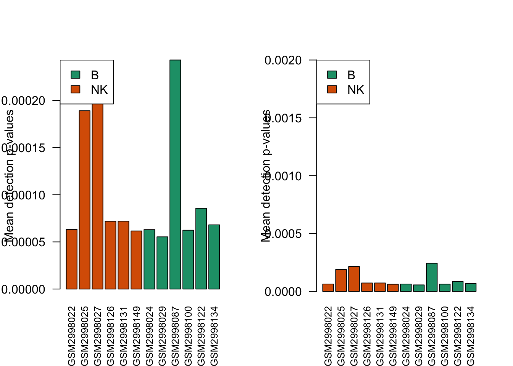
# remove poor quality samples
keep <- colMeans(detP) < 0.05
keepNK_GSM2998022 NK_GSM2998025 NK_GSM2998027 NK_GSM2998126 NK_GSM2998131
TRUE TRUE TRUE TRUE TRUE
NK_GSM2998149 B_GSM2998024 B_GSM2998029 B_GSM2998087 B_GSM2998100
TRUE TRUE TRUE TRUE TRUE
B_GSM2998122 B_GSM2998134
TRUE TRUE rgSet <- rgSet[,keep]
rgSetclass: RGChannelSet
dim: 1051815 12
metadata(0):
assays(2): Green Red
rownames(1051815): 1600101 1600111 ... 99810990 99810992
rowData names(0):
colnames(12): NK_GSM2998022 NK_GSM2998025 ... B_GSM2998122 B_GSM2998134
colData names(0):
Annotation
array: IlluminaHumanMethylationEPIC
annotation: ilm10b4.hg19# normalize the data; this results in a GenomicRatioSet object
mSetSq <- preprocessQuantile(rgSet)[preprocessQuantile] Mapping to genome.[preprocessQuantile] Fixing outliers.[preprocessQuantile] Quantile normalizing.mSetSqclass: GenomicRatioSet
dim: 865859 12
metadata(0):
assays(2): M CN
rownames(865859): cg14817997 cg26928153 ... cg07587934 cg16855331
rowData names(0):
colnames(12): NK_GSM2998022 NK_GSM2998025 ... B_GSM2998122 B_GSM2998134
colData names(3): xMed yMed predictedSex
Annotation
array: IlluminaHumanMethylationEPIC
annotation: ilm10b4.hg19
Preprocessing
Method: Raw (no normalization or bg correction)
minfi version: 1.50.0
Manifest version: 0.3.0# create a MethylSet object from the raw data for plotting
mSetRaw <- preprocessRaw(rgSet)
mSetRawclass: MethylSet
dim: 866091 12
metadata(0):
assays(2): Meth Unmeth
rownames(866091): cg18478105 cg09835024 ... cg10633746 cg12623625
rowData names(0):
colnames(12): NK_GSM2998022 NK_GSM2998025 ... B_GSM2998122 B_GSM2998134
colData names(0):
Annotation
array: IlluminaHumanMethylationEPIC
annotation: ilm10b4.hg19
Preprocessing
Method: Raw (no normalization or bg correction)
minfi version: 1.50.0
Manifest version: 0.3.0# visualise what the data looks like before and after normalisation
par(mfrow=c(1,2))
densityPlot(rgSet, sampGroups=blood_samples$short_group,main="Raw", legend=FALSE)
legend("top", legend = levels(factor(blood_samples$short_group)),
text.col=brewer.pal(8,"Dark2"))
densityPlot(getBeta(mSetSq), sampGroups=blood_samples$short_group,
main="Normalized", legend=FALSE)
legend("top", legend = levels(factor(blood_samples$short_group)),
text.col=brewer.pal(8,"Dark2"))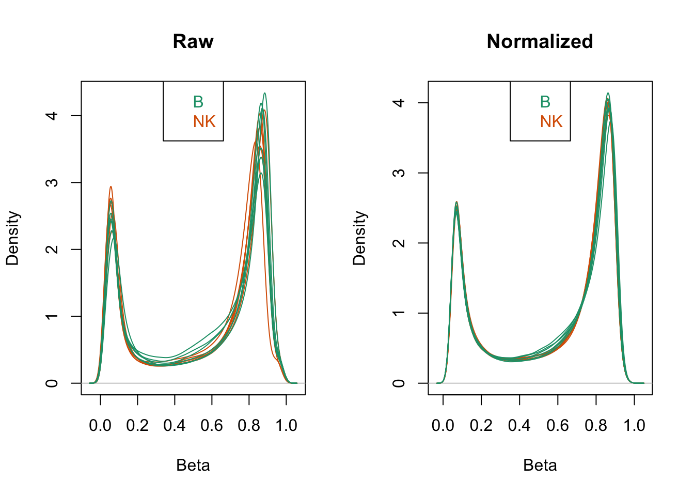
# MDS plots to look at largest sources of variation
par(mfrow=c(1,2))
plotMDS(getM(mSetSq), top=1000, gene.selection="common",
col=pal[factor(blood_samples$short_group)])
legend("top", legend=levels(factor(blood_samples$short_group)), text.col=pal,
bg="white", cex=0.7)
plotMDS(getM(mSetSq), top=1000, gene.selection="common",
col=pal[factor(blood_samples$sample_num)])
legend("top", legend=levels(factor(blood_samples$sample_num)), text.col=pal,
bg="white", cex=0.7)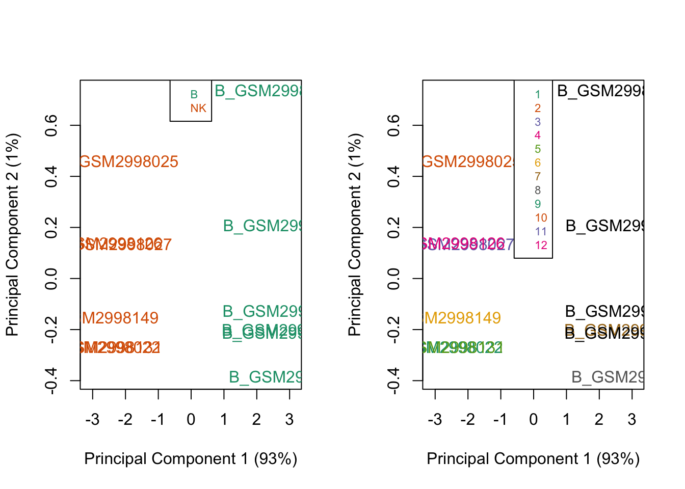
par(mfrow=c(1,3))
plotMDS(getM(mSetSq), top=1000, gene.selection="common",
col=pal[factor(blood_samples$short_group)], dim = c(1,3))
legend("top", legend=levels(factor(blood_samples$short_group)), text.col=pal,
bg="white", cex=0.7)
plotMDS(getM(mSetSq), top=1000, gene.selection="common",
col=pal[factor(blood_samples$short_group)], dim = c(2,3))
legend("top", legend=levels(factor(blood_samples$short_group)), text.col=pal,
bg="white", cex=0.7)
plotMDS(getM(mSetSq), top=1000, gene.selection="common",
col=pal[factor(blood_samples$short_group)], dim = c(3,4))
legend("top", legend=levels(factor(blood_samples$short_group)), text.col=pal,
bg="white", cex=0.7)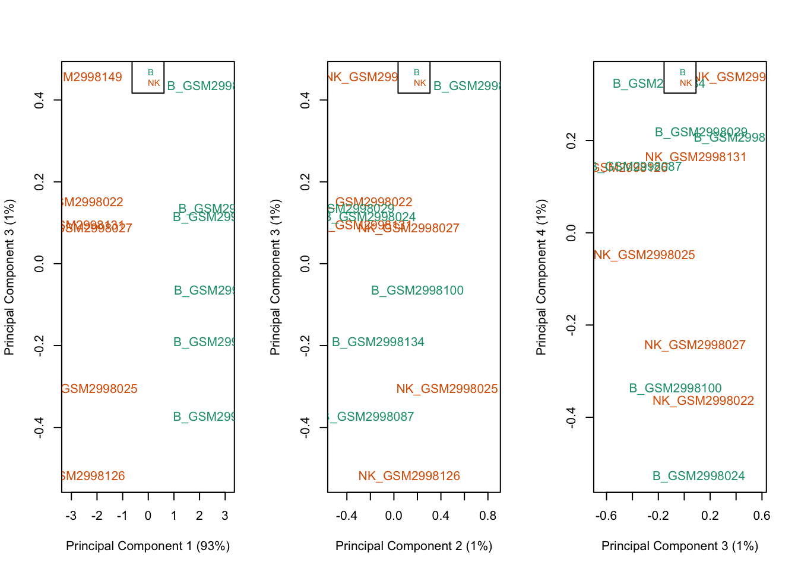
# ensure probes are in the same order in the mSetSq and detP objects
detP <- detP[match(featureNames(mSetSq),rownames(detP)),]
# remove any probes that have failed in one or more samples
keep <- rowSums(detP < 0.01) == ncol(mSetSq)
table(keep)keep
FALSE TRUE
1354 864505 mSetSqFlt <- mSetSq[keep,]
mSetSqFltclass: GenomicRatioSet
dim: 864505 12
metadata(0):
assays(2): M CN
rownames(864505): cg14817997 cg26928153 ... cg07587934 cg16855331
rowData names(0):
colnames(12): NK_GSM2998022 NK_GSM2998025 ... B_GSM2998122 B_GSM2998134
colData names(3): xMed yMed predictedSex
Annotation
array: IlluminaHumanMethylationEPIC
annotation: ilm10b4.hg19
Preprocessing
Method: Raw (no normalization or bg correction)
minfi version: 1.50.0
Manifest version: 0.3.0anno_array <- getAnnotation(IlluminaHumanMethylationEPICanno.ilm10b4.hg19)
anno_array <- anno_array %>% data.frame() %>% mutate(seqnames = chr, start = pos, width = 1) %>% relocate(c(seqnames, start, width))
nrow(anno_array)[1] 865859head(anno_array) seqnames start width chr pos strand Name AddressA
cg18478105 chr20 61847650 1 chr20 61847650 - cg18478105 46761277
cg09835024 chrX 24072640 1 chrX 24072640 - cg09835024 16745152
cg14361672 chr9 131463936 1 chr9 131463936 + cg14361672 51800947
cg01763666 chr17 80159506 1 chr17 80159506 + cg01763666 37768834
cg12950382 chr14 105176736 1 chr14 105176736 + cg12950382 8726444
cg02115394 chr13 115000168 1 chr13 115000168 + cg02115394 68602543
AddressB ProbeSeqA
cg18478105 86644198 AAATAAATTTCACTCTCAAATCCCAATCTCATACAACAAAACAAAAACCA
cg09835024 81631976 AATAAACACCAACCCCAAACCAATCTCACTTTATTAAATTACAAAAATCA
cg14361672 7743487 ATCACTACCTAATCTATAACAAACCATTCAACCCATCCTAACATCCTACA
cg01763666 23754592 AAACAAAAATAAACAAACTCAAAATAAAAACAACTAAACTAAAACAAACA
cg12950382 76660327 ATACCAAAAAATAACAATATACTTATATATATACACATACCCAAATAACA
cg02115394 59659581 AAAATCACTACAACACCTCTAAACATTAACAAAAAAATCAAAAAAACTCA
ProbeSeqB Type NextBase
cg18478105 AAATAAATTTCGCTCTCAAATCCCAATCTCGTACGACGAAACGAAAACCG I C
cg09835024 AATAAACGCCGACCCCGAACCGATCTCGCTTTATTAAATTACAAAAATCG I A
cg14361672 ATCACTACCTAATCTATAACGAACCATTCAACCCGTCCTAACATCCTACG I T
cg01763666 GAACAAAAATAAACGAACTCAAAATAAAAACAACTAAACTAAAACAAACG I C
cg12950382 GTACCGAAAAATAACAATATACTTATATATATACACGTACCCGAATAACG I A
cg02115394 AAAATCGCTACGACGCCTCTAAACATTAACGAAAAAATCAAAAAAACTCG I A
Color Probe_rs Probe_maf CpG_rs CpG_maf SBE_rs SBE_maf
cg18478105 Grn <NA> NA <NA> NA <NA> NA
cg09835024 Red <NA> NA <NA> NA <NA> NA
cg14361672 Red <NA> NA <NA> NA <NA> NA
cg01763666 Grn <NA> NA <NA> NA <NA> NA
cg12950382 Red rs12882277 0.378464 <NA> NA <NA> NA
cg02115394 Red <NA> NA <NA> NA <NA> NA
Islands_Name Relation_to_Island
cg18478105 chr20:61846843-61848103 Island
cg09835024 chrX:24072558-24073135 Island
cg14361672 chr9:131464843-131465830 N_Shore
cg01763666 OpenSea
cg12950382 OpenSea
cg02115394 chr13:115000148-115000874 Island
Forward_Sequence
cg18478105 TCCCGTCTTACGGGATGGATTTCGCTCTCAGGTCCCAGTCTCGTGCGGCGGGGCGGGGAC[CG]CAGCCGGCTGGGCGGGGAAGCCCTGAGCCGGGGAAGTCACGTGGGGCGTGTCCGGAGGCG
cg09835024 AGCCCCGTCATAGGTGGGCGCCGACCCCGAGCCGATCTCGCTTTATTAAATTACAGAAAT[CG]GTATTCAAAAAAAAAAAAAAAAAAGGGCGGGGAGGACACTCCCTCTTCTCTGTTCCCACA
cg14361672 TCACCTTCCCACCTCCTGGAGGACGCTCCTCCACGAAGTGCTGACACAACCTCCTGTAAA[CG]CAGGATGCCAGGACGGGCTGAATGGCCCGCCATAGACTAGGCAGTGACCAGCACACCTCC
cg01763666 CTGGAATGCCAGCTGCTGCTGCTGCTGCAGCTCCTCCACCTTCCTGGCCTCTCTGGCTAG[CG]CCTGCCTCAGCTTAGCTGCCTCTATCTTGAGCTCGCTCACCTCTGCCCGCCTGGCCTCTT
cg12950382 CCCTGCTGCCACCACCTCGGTGCACACACCTACTGGACGCACAGACACACGCATGCCCAC[CG]CCACTCGGGCACGTGCACACACACAAGCACACTGCCACTCTCCGGCACGCGCACACACAA
cg02115394 TTCTGGGGAAAGAAGGCTCAGCAGCCACCTGCTTTTTTGCCCGGGTGGGTGGTCCGGCCC[CG]AGCCCTCCTGACTCTCTCGCCAATGCCCAGAGGCGCCGCAGCGATTCCAGGGAGGCCGCG
SourceSeq UCSC_RefGene_Name
cg18478105 CGGTCCCCGCCCCGCCGCACGAGACTGGGACCTGAGAGCGAAATCCATCC YTHDF1
cg09835024 GGTGGGCGCCGACCCCGAGCCGATCTCGCTTTATTAAATTACAGAAATCG EIF2S3
cg14361672 CGCAGGATGCCAGGACGGGCTGAATGGCCCGCCATAGACTAGGCAGTGAC PKN3
cg01763666 CGCCTGCCTCAGCTTAGCTGCCTCTATCTTGAGCTCGCTCACCTCTGCCC CCDC57
cg12950382 CGCCACTCGGGCACGTGCACACACACAAGCACACTGCCACTCTCCGGCAC INF2;INF2
cg02115394 GGAATCGCTGCGGCGCCTCTGGGCATTGGCGAGAGAGTCAGGAGGGCTCG CDC16;CDC16
UCSC_RefGene_Accession UCSC_RefGene_Group Phantom4_Enhancers
cg18478105 NM_017798 TSS200
cg09835024 NM_001415 TSS1500
cg14361672 NM_013355 TSS1500
cg01763666 NM_198082 Body
cg12950382 NM_022489;NM_001031714 Body;Body
cg02115394 NM_003903;NM_001078645 TSS200;TSS200
Phantom5_Enhancers DMR X450k_Enhancer HMM_Island
cg18478105 20:61317142-61318498
cg09835024
cg14361672
cg01763666 17:77752688-77752973
cg12950382 14:104247518-104247873
cg02115394 13:114018251-114018976
Regulatory_Feature_Name Regulatory_Feature_Group
cg18478105 20:61846284-61847956 Promoter_Associated
cg09835024 X:24071907-24073667 Promoter_Associated
cg14361672
cg01763666
cg12950382
cg02115394 13:115000009-115001429 Promoter_Associated
GencodeBasicV12_NAME
cg18478105 YTHDF1;YTHDF1
cg09835024 EIF2S3
cg14361672 PKN3
cg01763666
cg12950382
cg02115394 CDC16;CDC16;CDC16;CDC16;CDC16
GencodeBasicV12_Accession
cg18478105 ENST00000370334.4;ENST00000370339.3
cg09835024 ENST00000253039.4
cg14361672 ENST00000291906.4
cg01763666
cg12950382
cg02115394 ENST00000375312.3;ENST00000356221.3;ENST00000375310.1;ENST00000252457.5;ENST00000252458.6
GencodeBasicV12_Group
cg18478105 TSS200;TSS200
cg09835024 TSS200
cg14361672 TSS1500
cg01763666
cg12950382
cg02115394 TSS200;TSS1500;TSS1500;TSS1500;TSS1500
GencodeCompV12_NAME
cg18478105 YTHDF1;YTHDF1
cg09835024 EIF2S3;EIF2S3;EIF2S3
cg14361672 PKN3
cg01763666
cg12950382 INF2;INF2
cg02115394 CDC16;CDC16;CDC16;CDC16;CDC16;CDC16
GencodeCompV12_Accession
cg18478105 ENST00000370334.4;ENST00000370339.3
cg09835024 ENST00000487075.1;ENST00000423068.1;ENST00000253039.4
cg14361672 ENST00000291906.4
cg01763666
cg12950382 ENST00000474229.1;ENST00000480763.1
cg02115394 ENST00000360383.3;ENST00000356221.3;ENST00000375310.1;ENST00000494766.1;ENST00000375308.1;ENST00000252458.6
GencodeCompV12_Group
cg18478105 TSS200;TSS200
cg09835024 TSS1500;TSS1500;TSS200
cg14361672 TSS1500
cg01763666
cg12950382 5'UTR;TSS1500
cg02115394 TSS200;TSS1500;TSS1500;TSS1500;TSS1500;TSS1500
DNase_Hypersensitivity_NAME DNase_Hypersensitivity_Evidence_Count
cg18478105 chr20:61847520-61847755 3
cg09835024 chrX:24072600-24073395 3
cg14361672
cg01763666 chr17:80159145-80159790 3
cg12950382
cg02115394
OpenChromatin_NAME OpenChromatin_Evidence_Count TFBS_NAME
cg18478105
cg09835024
cg14361672 chr9:131463740-131463970 3
cg01763666
cg12950382 chr14:105171651-105183138 6
cg02115394 chr13:114999804-115001809 6
TFBS_Evidence_Count Methyl27_Loci Methyl450_Loci Random_Loci
cg18478105 TRUE
cg09835024 TRUE
cg14361672 TRUE
cg01763666 TRUE
cg12950382 TRUE
cg02115394 TRUE keep <- featureNames(mSetSqFlt) %in% anno_array$Name
table(keep)keep
TRUE
864505 mSetSqFlt <- mSetSqFlt[keep,]# if your data includes males and females, remove probes on the sex chromosomes
keep <- !(featureNames(mSetSqFlt) %in% anno_array$Name[anno_array$seqnames %in%
c("chrX","chrY")])
table(keep)keep
FALSE TRUE
19234 845271 mSetSqFlt <- mSetSqFlt[keep,]# remove probes with SNPs at CpG site
mSetSqFlt <- dropLociWithSnps(mSetSqFlt)
mSetSqFltclass: GenomicRatioSet
dim: 815590 12
metadata(0):
assays(2): M CN
rownames(815590): cg14817997 cg26928153 ... cg07660283 cg09226288
rowData names(0):
colnames(12): NK_GSM2998022 NK_GSM2998025 ... B_GSM2998122 B_GSM2998134
colData names(3): xMed yMed predictedSex
Annotation
array: IlluminaHumanMethylationEPIC
annotation: ilm10b4.hg19
Preprocessing
Method: Raw (no normalization or bg correction)
minfi version: 1.50.0
Manifest version: 0.3.0cross_reactive_probes <- read.table("../data/microarray/cross_reactive_probes_supp2.txt")
nrow(cross_reactive_probes)[1] 42558head(cross_reactive_probes) V1
1 cg00001510
2 cg00002590
3 cg00003969
4 cg00004121
5 cg00004192
6 cg00004209keep <- !(featureNames(mSetSqFlt) %in% cross_reactive_probes$V1)
table(keep)keep
FALSE TRUE
38925 776665 mSetSqFlt <- mSetSqFlt[keep,]
mSetSqFltclass: GenomicRatioSet
dim: 776665 12
metadata(0):
assays(2): M CN
rownames(776665): cg26928153 cg16269199 ... cg19565306 cg09226288
rowData names(0):
colnames(12): NK_GSM2998022 NK_GSM2998025 ... B_GSM2998122 B_GSM2998134
colData names(3): xMed yMed predictedSex
Annotation
array: IlluminaHumanMethylationEPIC
annotation: ilm10b4.hg19
Preprocessing
Method: Raw (no normalization or bg correction)
minfi version: 1.50.0
Manifest version: 0.3.0par(mfrow=c(1,2))
plotMDS(getM(mSetSqFlt), top=1000, gene.selection="common",
col=pal[factor(blood_samples$short_group)], cex=0.8)
legend("right", legend=levels(factor(blood_samples$short_group)), text.col=pal,
cex=0.65, bg="white")
plotMDS(getM(mSetSqFlt), top=1000, gene.selection="common",
col=pal[factor(blood_samples$sample_num)])
legend("right", legend=levels(factor(blood_samples$sample_num)), text.col=pal,
cex=0.7, bg="white")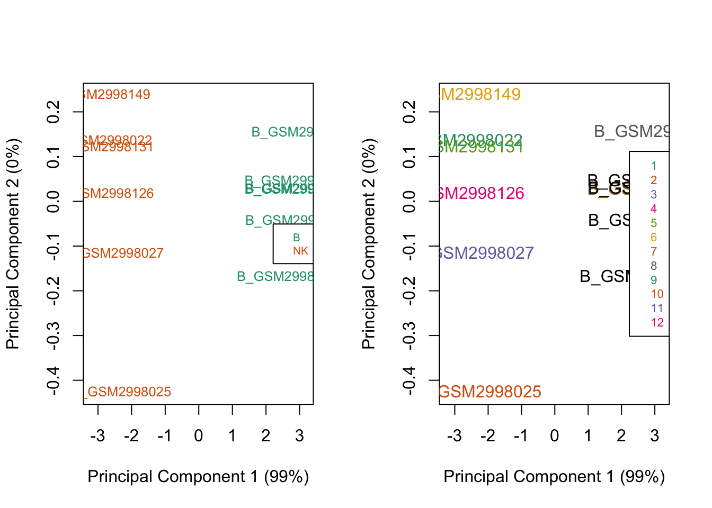
par(mfrow=c(1,3))
plotMDS(getM(mSetSqFlt), top=1000, gene.selection="common",
col=pal[factor(blood_samples$short_group)], dim = c(1,3))
legend("top", legend=levels(factor(blood_samples$short_group)), text.col=pal,
bg="white", cex=0.7)
plotMDS(getM(mSetSqFlt), top=1000, gene.selection="common",
col=pal[factor(blood_samples$short_group)], dim = c(2,3))
legend("top", legend=levels(factor(blood_samples$short_group)), text.col=pal,
bg="white", cex=0.7)
plotMDS(getM(mSetSqFlt), top=1000, gene.selection="common",
col=pal[factor(blood_samples$short_group)], dim = c(3,4))
legend("top", legend=levels(factor(blood_samples$short_group)), text.col=pal,
bg="white", cex=0.7)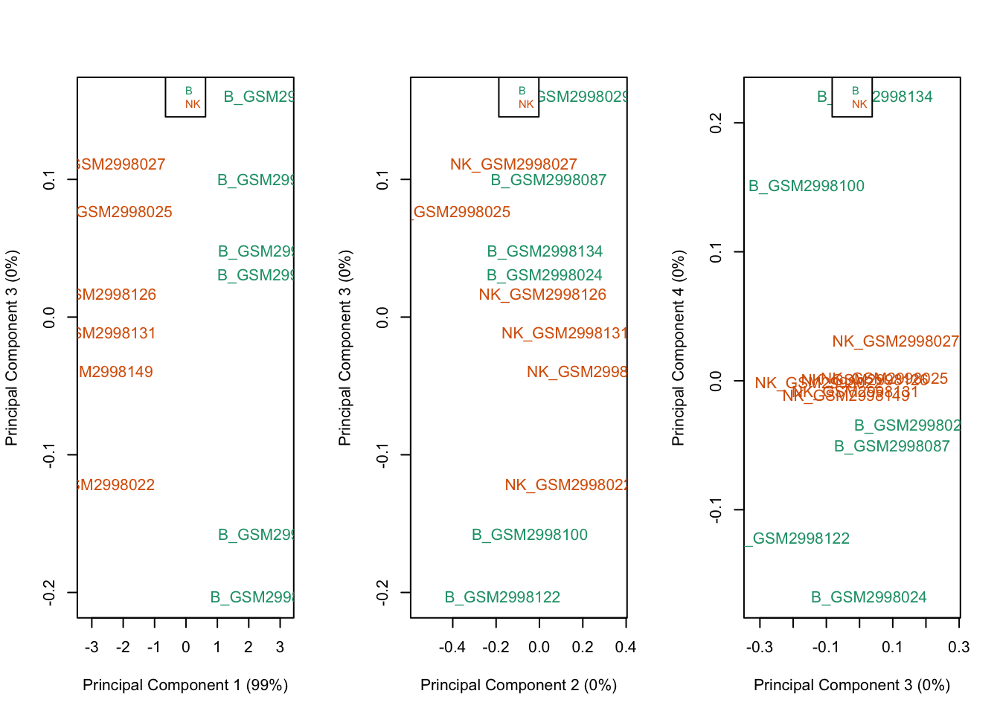
mVals <- getM(mSetSqFlt)
head(mVals[,1:5]) NK_GSM2998022 NK_GSM2998025 NK_GSM2998027 NK_GSM2998126
cg26928153 2.376519 2.3212529 2.5833127 2.4733269
cg16269199 1.195006 1.0723985 1.4521405 1.4945754
cg13869341 2.002663 1.8157279 1.8925120 2.4929067
cg24669183 1.785647 1.7564415 1.9988501 1.6793392
cg26679879 -1.128457 -1.0423952 -0.5383319 -0.5321080
cg22519184 -1.170990 -0.9967624 -0.5123484 -0.6901056
NK_GSM2998131
cg26928153 2.1177105
cg16269199 1.4078598
cg13869341 1.8608433
cg24669183 1.9148562
cg26679879 -0.7715623
cg22519184 -0.7880798bVals <- getBeta(mSetSqFlt)
head(bVals[,1:5]) NK_GSM2998022 NK_GSM2998025 NK_GSM2998027 NK_GSM2998126
cg26928153 0.8385227 0.8332683 0.8570028 0.8474035
cg16269199 0.6959985 0.6777236 0.7323439 0.7380699
cg13869341 0.8002951 0.7787793 0.7878124 0.8491502
cg24669183 0.7751663 0.7716184 0.7998724 0.7620641
cg26679879 0.3138488 0.3268354 0.4077817 0.4088240
cg22519184 0.3075350 0.3338322 0.4121383 0.3826431
NK_GSM2998131
cg26928153 0.8127357
cg16269199 0.7262848
cg13869341 0.7841198
cg24669183 0.7903899
cg26679879 0.3693966
cg22519184 0.3667336par(mfrow=c(1,2))
densityPlot(bVals, sampGroups=blood_samples$short_group, main="Beta values",
legend=FALSE, xlab="Beta values")
legend("top", legend = levels(factor(blood_samples$short_group)),
text.col=brewer.pal(8,"Dark2"))
densityPlot(mVals, sampGroups=blood_samples$short_group, main="M-values",
legend=FALSE, xlab="M values")
legend("topleft", legend = levels(factor(blood_samples$short_group)),
text.col=brewer.pal(8,"Dark2"))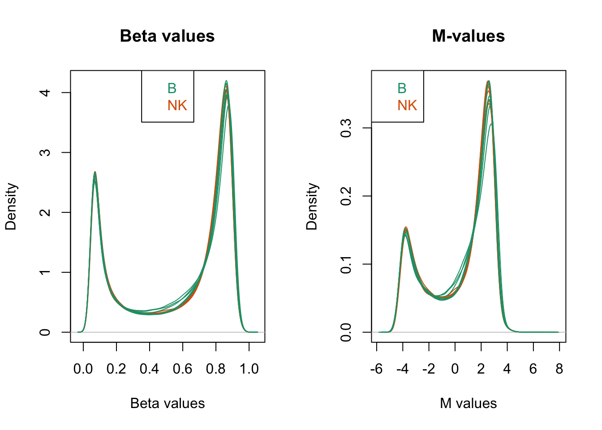
# this is the factor of interest
cellType <- factor(blood_samples$short_group)
# this is the individual effect that we need to account for
individual <- factor(blood_samples$id_group)
# use the above to create a design matrix
#design <- model.matrix(~0+cellType+individual, data=blood_samples)
#colnames(design) <- c(levels(cellType),levels(individual)[-1])
design <- model.matrix(~0+cellType, data=blood_samples)
colnames(design) <- c(levels(cellType))
design B NK
1 0 1
2 0 1
3 0 1
4 0 1
5 0 1
6 0 1
7 1 0
8 1 0
9 1 0
10 1 0
11 1 0
12 1 0
attr(,"assign")
[1] 1 1
attr(,"contrasts")
attr(,"contrasts")$cellType
[1] "contr.treatment"# fit the linear model
fit <- lmFit(mVals, design)
# create a contrast matrix for specific comparisons
contMatrix <- makeContrasts(NK-B,
levels=design)
contMatrix Contrasts
Levels NK - B
B -1
NK 1# fit the contrasts
fit2 <- contrasts.fit(fit, contMatrix)
fit2 <- eBayes(fit2)
# look at the numbers of DM CpGs at FDR < 0.05
summary(decideTests(fit2)) NK - B
Down 107283
NotSig 564569
Up 104813# get the table of results for the first contrast
# do for 2nd contrast - nk - b
annoSub <- anno_array[match(rownames(mVals),anno_array$Name),
c(1:3,9)]
DMPs <- topTable(fit2, num=Inf, coef=1, genelist=annoSub)
nrow(DMPs)[1] 776665head(DMPs) seqnames start width AddressB logFC AveExpr t
cg15949485 chr2 99273454 1 -5.737982 -0.4955390 -72.04207
cg17092391 chr7 73515902 1 5.898663 -0.5920786 70.76621
cg11661493 chr17 74423978 1 6.428390 -0.5212259 70.70861
cg07021509 chr8 61892203 1 6.790302 -0.6455871 70.40347
cg01165928 chr7 102082517 1 6.220094 -0.2474618 70.02329
cg18664915 chr7 1043861 1 5.903508 -0.1854076 69.91840
P.Value adj.P.Val B
cg15949485 2.400819e-19 3.298931e-14 33.52771
cg17092391 3.078692e-19 3.298931e-14 33.34358
cg11661493 3.113780e-19 3.298931e-14 33.33514
cg07021509 3.306948e-19 3.298931e-14 33.29026
cg01165928 3.565771e-19 3.298931e-14 33.23389
cg18664915 3.640940e-19 3.298931e-14 33.21826DMPs %>% filter(adj.P.Val < 0.05) %>% nrow(.)[1] 212096# plot the top 4 most significantly differentially methylated CpGs
par(mfrow=c(2,2))
sapply(rownames(DMPs)[1:4], function(cpg){
plotCpg(bVals, cpg=cpg, pheno=blood_samples$short_group, ylab = "Beta values")
})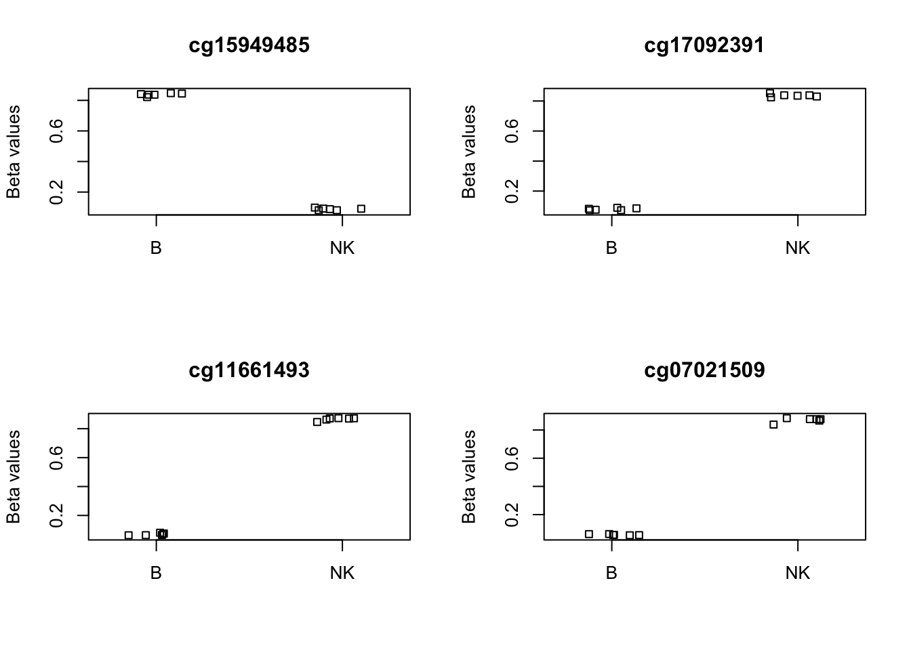
$cg15949485
NULL
$cg17092391
NULL
$cg11661493
NULL
$cg07021509
NULLnrow(mVals)[1] 776665ALLMs.noSNPs <- rmSNPandCH(mVals, rmcrosshyb = FALSE)Probe IDs from EPICv1 or earlier detected. Proceeding...see ?DMRcatedata and browseVignettes('DMRcatedata') for documentationloading from cachenrow(ALLMs.noSNPs)[1] 772927ALLMs.noSNPs %>% data.frame() %>% head() NK_GSM2998022 NK_GSM2998025 NK_GSM2998027 NK_GSM2998126
cg26928153 2.376519 2.3212529 2.5833127 2.4733269
cg16269199 1.195006 1.0723985 1.4521405 1.4945754
cg13869341 2.002663 1.8157279 1.8925120 2.4929067
cg24669183 1.785647 1.7564415 1.9988501 1.6793392
cg26679879 -1.128457 -1.0423952 -0.5383319 -0.5321080
cg22519184 -1.170990 -0.9967624 -0.5123484 -0.6901056
NK_GSM2998131 NK_GSM2998149 B_GSM2998024 B_GSM2998029 B_GSM2998087
cg26928153 2.1177105 2.4930439 2.4627237 2.2908430 2.1174863
cg16269199 1.4078598 1.3890467 1.1758524 1.2514773 1.1630183
cg13869341 1.8608433 1.8955422 1.8396427 1.8457617 1.9508710
cg24669183 1.9148562 1.6015930 1.8338851 1.8691560 2.0808133
cg26679879 -0.7715623 -1.1276719 -1.0042223 -0.6192842 -0.7790826
cg22519184 -0.7880798 -0.9884659 -0.9757157 -0.8658221 -0.8096853
B_GSM2998100 B_GSM2998122 B_GSM2998134
cg26928153 2.0807858 2.084757 2.1926477
cg16269199 1.2742493 1.192080 1.3983498
cg13869341 1.5789544 1.965692 2.5177627
cg24669183 1.7130067 1.992926 1.7064747
cg26679879 -0.3681687 -1.087983 -0.7976474
cg22519184 -0.5155199 -1.086221 -0.8005237cellType <- factor(blood_samples$short_group)
design <- model.matrix(~cellType)
design (Intercept) cellTypeNK
1 1 1
2 1 1
3 1 1
4 1 1
5 1 1
6 1 1
7 1 0
8 1 0
9 1 0
10 1 0
11 1 0
12 1 0
attr(,"assign")
[1] 0 1
attr(,"contrasts")
attr(,"contrasts")$cellType
[1] "contr.treatment"myannotation <- cpg.annotate("array", ALLMs.noSNPs, arraytype = "EPICv1",
analysis.type="differential", design=design, coef=2, what = "M")Your contrast returned 211508 individually significant probes. We recommend the default setting of pcutoff in dmrcate().dmrcate_array_anno <- myannotation@ranges %>% data.frame()
head(dmrcate_array_anno) seqnames start end width strand stat diff rawpval
1 chr1 10848 10848 1 * 1.9502987 0.018342788 0.07148299
2 chr1 10850 10850 1 * 1.0534995 0.012897409 0.30998038
3 chr1 15865 15865 1 * 0.2893456 0.005521236 0.77656348
4 chr1 534242 534242 1 * -0.8153243 -0.009086828 0.42855896
5 chr1 564501 564501 1 * -0.5550500 -0.012696647 0.58763201
6 chr1 564504 564504 1 * -0.1274281 -0.002198261 0.90041629
ind.fdr is.sig
1 0.1789794 FALSE
2 0.4974908 FALSE
3 0.8731868 FALSE
4 0.6114140 FALSE
5 0.7428771 FALSE
6 0.9468056 FALSEdmrcate_array_anno %>% filter(is.sig == TRUE) %>% nrow(.)[1] 211508dmrcoutput <- dmrcate(myannotation, lambda=1000, C=2)Fitting chr1...Fitting chr2...Fitting chr3...Fitting chr4...Fitting chr5...Fitting chr6...Fitting chr7...Fitting chr8...Fitting chr9...Fitting chr10...Fitting chr11...Fitting chr12...Fitting chr13...Fitting chr14...Fitting chr15...Fitting chr16...Fitting chr17...Fitting chr18...Fitting chr19...Fitting chr20...Fitting chr21...Fitting chr22...Demarcating regions...Done!dmrcoutputDMResults object with 34263 DMRs.
Use extractRanges() to produce a GRanges object of these.#saveRDS(myannotation, "../output/dmrcate_array_anno.rds")
#saveRDS(dmrcoutput, "../output/dmrcate_array_out.rds")dmrcate_array_dmr <- extractRanges(dmrcoutput, genome = "hg19")see ?DMRcatedata and browseVignettes('DMRcatedata') for documentationloading from cachedmrcate_array_dmr %>% data.frame() %>% nrow(.)[1] 34263dmrcate_array_dmr %>% data.frame() %>% head() seqnames start end width strand no.cpgs min_smoothed_fdr
1 chr7 27194614 27214915 20302 * 122 0
2 chr6 33263120 33268842 5723 * 93 0
3 chr6 30652202 30659513 7312 * 92 0
4 chr6 31695027 31701808 6782 * 77 0
5 chr10 8091753 8103673 11921 * 76 0
6 chr6 31862674 31869553 6880 * 71 0
Stouffer HMFDR Fisher maxdiff meandiff
1 1.368969e-252 1.004780e-10 8.358899e-300 0.4867324 0.049689927
2 5.171285e-16 7.509885e-11 1.570294e-41 0.3729442 0.013052812
3 4.963010e-114 4.143546e-13 1.165282e-199 0.7071281 0.094208223
4 8.315485e-14 5.048319e-12 7.991628e-28 0.5149155 0.006641734
5 4.221798e-136 6.789293e-11 5.165912e-154 -0.6646075 -0.063021330
6 5.905523e-30 1.637112e-11 1.316075e-65 -0.6704265 -0.026350362
overlapping.genes
1 HOXA-AS3, RP1-170O19.21, HOXA10-AS, HOXA7, HOXA9, RP1-170O19.20, MIR196B, HOXA10
2 PFDN6, RGL2, TAPBP
3 PPP1R18, NRM
4 DDAH2, CLIC1
5 RP11-379F12.4, GATA3, GATA3-AS1, RP11-379F12.3
6 C2, EHMT2, ZBTB12dmrcate_array_dmr %>% data.frame() %>% filter(min_smoothed_fdr < 0.05) %>% nrow(.) # all dmrs are significant[1] 34263#saveRDS(dmrcate_array_dmr, "../output/dmrcate_array_dmr.rds")dmrcate_array_anno <- dmrcate_array_anno %>% .[order(.$ind.fdr),] %>% mutate(rank = 1:nrow(.))
DMPs <- DMPs %>% mutate(signif = ifelse(adj.P.Val < 0.05, TRUE, FALSE), rank = 1:nrow(.))anno_array$position <- paste0(anno_array$seqnames, "-", anno_array$start)
DMPs$cg_id <- rownames(DMPs)
DMPs$pos <- paste0(DMPs$seqnames, "-", DMPs$start)
dmrcate_array_anno$pos <- paste0(dmrcate_array_anno$seqnames, "-", dmrcate_array_anno$start)
dmrcate_array_anno <- dmrcate_array_anno %>% mutate(cg_id = anno_array[match(.$pos, anno_array$position), "Name"])overlap_tested <- find_overlaps(as_granges(DMPs),
as_granges(dmrcate_array_anno)) %>% data.frame()
nrow(overlap_tested)[1] 772927head(overlap_tested) seqnames start end width strand AddressB logFC AveExpr
1 chr2 99273454 99273454 1 * -5.737982 -0.4955390
2 chr7 73515902 73515902 1 * 5.898663 -0.5920786
3 chr17 74423978 74423978 1 * 6.428390 -0.5212259
4 chr8 61892203 61892203 1 * 6.790302 -0.6455871
5 chr7 102082517 102082517 1 * 6.220094 -0.2474618
6 chr7 1043861 1043861 1 * 5.903508 -0.1854076
t P.Value adj.P.Val B signif rank.x cg_id.x
1 -72.04207 2.400819e-19 3.298931e-14 33.52771 TRUE 1 cg15949485
2 70.76621 3.078692e-19 3.298931e-14 33.34358 TRUE 2 cg17092391
3 70.70861 3.113780e-19 3.298931e-14 33.33514 TRUE 3 cg11661493
4 70.40347 3.306948e-19 3.298931e-14 33.29026 TRUE 4 cg07021509
5 70.02329 3.565771e-19 3.298931e-14 33.23389 TRUE 5 cg01165928
6 69.91840 3.640940e-19 3.298931e-14 33.21826 TRUE 6 cg18664915
pos.x stat diff rawpval ind.fdr is.sig rank.y
1 chr2-99273454 -71.99472 -0.7493808 2.267299e-19 3.093108e-14 TRUE 2
2 chr7-73515902 70.72959 0.7572015 2.903180e-19 3.093108e-14 TRUE 4
3 chr17-74423978 70.68855 0.7956987 2.926767e-19 3.093108e-14 TRUE 20
4 chr8-61892203 70.39319 0.8125228 3.102729e-19 3.093108e-14 TRUE 9
5 chr7-102082517 69.99932 0.7897311 3.355216e-19 3.093108e-14 TRUE 6
6 chr7-1043861 69.88482 0.7693460 3.432683e-19 3.093108e-14 TRUE 3
pos.y cg_id.y
1 chr2-99273454 cg15949485
2 chr7-73515902 cg17092391
3 chr17-74423978 cg11661493
4 chr8-61892203 cg07021509
5 chr7-102082517 cg01165928
6 chr7-1043861 cg18664915ggVennDiagram(list(minfi = DMPs$cg_id, dmrcate = dmrcate_array_anno$cg_id))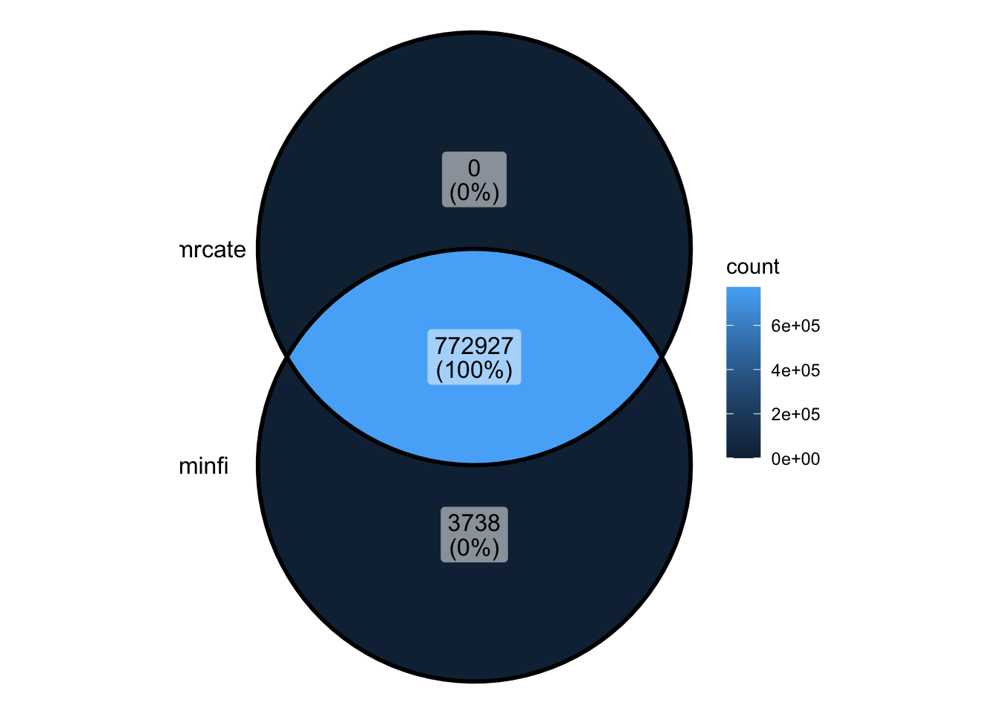 * All of DMRcate’s tested sites are also tested by minfi * minfi tests more sites than DMRcate - filtering is less strict
overlap_signif <- find_overlaps(as_granges(filter(DMPs, adj.P.Val < 0.05)),
as_granges(filter(dmrcate_array_anno, ind.fdr < 0.05))) %>% data.frame()
nrow(overlap_signif)[1] 211306head(overlap_signif) seqnames start end width strand AddressB logFC AveExpr
1 chr2 99273454 99273454 1 * -5.737982 -0.4955390
2 chr7 73515902 73515902 1 * 5.898663 -0.5920786
3 chr17 74423978 74423978 1 * 6.428390 -0.5212259
4 chr8 61892203 61892203 1 * 6.790302 -0.6455871
5 chr7 102082517 102082517 1 * 6.220094 -0.2474618
6 chr7 1043861 1043861 1 * 5.903508 -0.1854076
t P.Value adj.P.Val B signif rank.x cg_id.x
1 -72.04207 2.400819e-19 3.298931e-14 33.52771 TRUE 1 cg15949485
2 70.76621 3.078692e-19 3.298931e-14 33.34358 TRUE 2 cg17092391
3 70.70861 3.113780e-19 3.298931e-14 33.33514 TRUE 3 cg11661493
4 70.40347 3.306948e-19 3.298931e-14 33.29026 TRUE 4 cg07021509
5 70.02329 3.565771e-19 3.298931e-14 33.23389 TRUE 5 cg01165928
6 69.91840 3.640940e-19 3.298931e-14 33.21826 TRUE 6 cg18664915
pos.x stat diff rawpval ind.fdr is.sig rank.y
1 chr2-99273454 -71.99472 -0.7493808 2.267299e-19 3.093108e-14 TRUE 2
2 chr7-73515902 70.72959 0.7572015 2.903180e-19 3.093108e-14 TRUE 4
3 chr17-74423978 70.68855 0.7956987 2.926767e-19 3.093108e-14 TRUE 20
4 chr8-61892203 70.39319 0.8125228 3.102729e-19 3.093108e-14 TRUE 9
5 chr7-102082517 69.99932 0.7897311 3.355216e-19 3.093108e-14 TRUE 6
6 chr7-1043861 69.88482 0.7693460 3.432683e-19 3.093108e-14 TRUE 3
pos.y cg_id.y
1 chr2-99273454 cg15949485
2 chr7-73515902 cg17092391
3 chr17-74423978 cg11661493
4 chr8-61892203 cg07021509
5 chr7-102082517 cg01165928
6 chr7-1043861 cg18664915ggVennDiagram(list(minfi = filter(DMPs, adj.P.Val < 0.05)$cg_id,
dmrcate = filter(dmrcate_array_anno, ind.fdr < 0.05)$cg_id))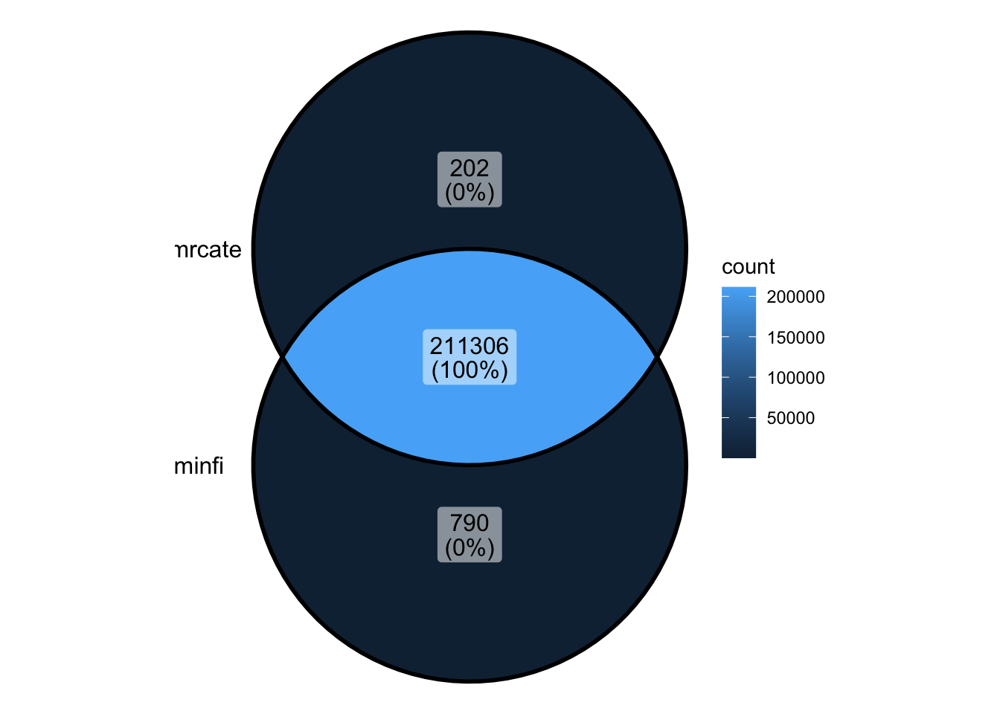 * the majority of significant sites overlap * demonstrates the robustness of the methods, and their similarity
overlap_signif %>%
ggplot(aes(x = rank.x, y = rank.y)) +
geom_point(alpha = 0.3) +
labs(x = "minfi_rank", y = "dmrcate_rank", title = "Compare rank of overlapping CpG sites")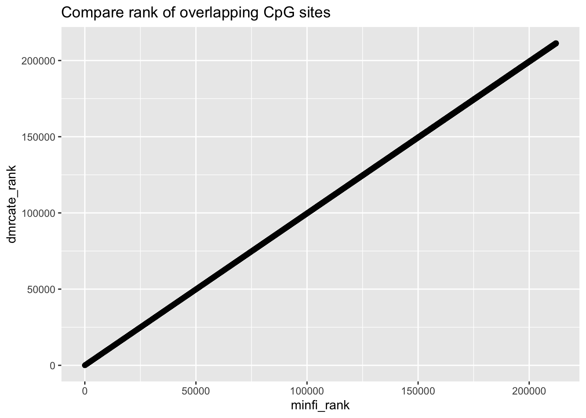
#compare fdr
overlap_signif %>%
ggplot(aes(x = adj.P.Val, y = ind.fdr)) +
geom_point(alpha = 0.3) +
labs(x = "minfi_fdr", y = "dmrcate_fdr", title = "Compare FDR of overlapping CpG sites")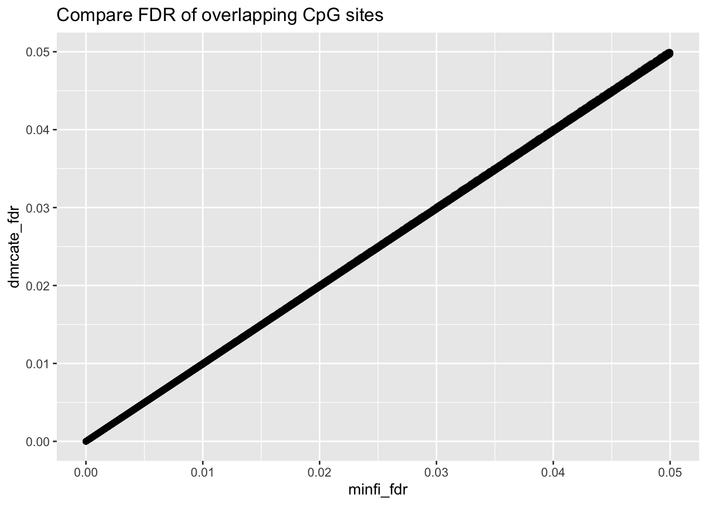
cor.test(overlap_signif$adj.P.Val, overlap_signif$ind.fdr)
Pearson's product-moment correlation
data: overlap_signif$adj.P.Val and overlap_signif$ind.fdr
t = 170944, df = 211304, p-value < 2.2e-16
alternative hypothesis: true correlation is not equal to 0
95 percent confidence interval:
0.9999964 0.9999964
sample estimates:
cor
0.9999964 dmrcate_array_dmr <- dmrcate_array_dmr %>% data.frame() %>% mutate(rank_dmr = 1:nrow(.))overlap_dmr_dmrcate <- find_overlaps(as_granges(dmrcate_array_dmr), as_granges(dmrcate_array_anno)) %>% data.frame()
nrow(overlap_dmr_dmrcate)[1] 177623head(overlap_dmr_dmrcate) seqnames start end width strand no.cpgs min_smoothed_fdr
1 chr7 27194614 27214915 20302 * 122 0
2 chr7 27194614 27214915 20302 * 122 0
3 chr7 27194614 27214915 20302 * 122 0
4 chr7 27194614 27214915 20302 * 122 0
5 chr7 27194614 27214915 20302 * 122 0
6 chr7 27194614 27214915 20302 * 122 0
Stouffer HMFDR Fisher maxdiff meandiff
1 1.368969e-252 1.00478e-10 8.358899e-300 0.4867324 0.04968993
2 1.368969e-252 1.00478e-10 8.358899e-300 0.4867324 0.04968993
3 1.368969e-252 1.00478e-10 8.358899e-300 0.4867324 0.04968993
4 1.368969e-252 1.00478e-10 8.358899e-300 0.4867324 0.04968993
5 1.368969e-252 1.00478e-10 8.358899e-300 0.4867324 0.04968993
6 1.368969e-252 1.00478e-10 8.358899e-300 0.4867324 0.04968993
overlapping.genes
1 HOXA-AS3, RP1-170O19.21, HOXA10-AS, HOXA7, HOXA9, RP1-170O19.20, MIR196B, HOXA10
2 HOXA-AS3, RP1-170O19.21, HOXA10-AS, HOXA7, HOXA9, RP1-170O19.20, MIR196B, HOXA10
3 HOXA-AS3, RP1-170O19.21, HOXA10-AS, HOXA7, HOXA9, RP1-170O19.20, MIR196B, HOXA10
4 HOXA-AS3, RP1-170O19.21, HOXA10-AS, HOXA7, HOXA9, RP1-170O19.20, MIR196B, HOXA10
5 HOXA-AS3, RP1-170O19.21, HOXA10-AS, HOXA7, HOXA9, RP1-170O19.20, MIR196B, HOXA10
6 HOXA-AS3, RP1-170O19.21, HOXA10-AS, HOXA7, HOXA9, RP1-170O19.20, MIR196B, HOXA10
rank_dmr stat diff rawpval ind.fdr is.sig rank
1 1 26.23070 0.3225760 2.729876e-13 4.438588e-11 TRUE 4752
2 1 25.61069 0.3381528 3.789685e-13 5.651456e-11 TRUE 5183
3 1 25.41212 0.4867324 4.216282e-13 6.114218e-11 TRUE 5330
4 1 23.27253 0.2054934 1.403985e-12 1.554028e-10 TRUE 6983
5 1 23.09359 0.3358522 1.559948e-12 1.690113e-10 TRUE 7134
6 1 21.35349 0.4544445 4.533665e-12 3.931993e-10 TRUE 8911
pos cg_id
1 chr7-27202344 cg01891966
2 chr7-27208590 cg23854860
3 chr7-27210168 cg15293367
4 chr7-27201728 cg08971667
5 chr7-27202797 cg09342060
6 chr7-27199726 cg25975690ggVennDiagram(list(dmr = overlap_dmr_dmrcate$cg_id, tested = dmrcate_array_anno$cg_id))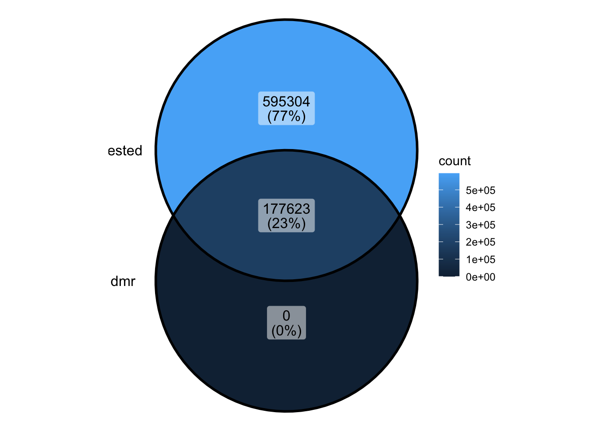 * DMRs represent only 23% of the tested CpGs
ggVennDiagram(list(dmr = overlap_dmr_dmrcate$cg_id, signif_cg = filter(dmrcate_array_anno, ind.fdr < 0.05)$cg_id))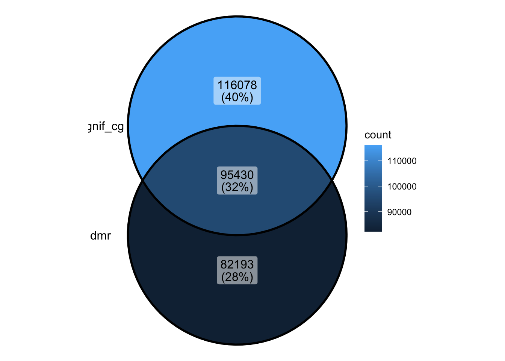
95430/(95430+116078)[1] 0.4511886
sessionInfo()R version 4.4.2 (2024-10-31)
Platform: aarch64-apple-darwin20
Running under: macOS Sequoia 15.2
Matrix products: default
BLAS: /Library/Frameworks/R.framework/Versions/4.4-arm64/Resources/lib/libRblas.0.dylib
LAPACK: /Library/Frameworks/R.framework/Versions/4.4-arm64/Resources/lib/libRlapack.dylib; LAPACK version 3.12.0
locale:
[1] en_US.UTF-8/en_US.UTF-8/en_US.UTF-8/C/en_US.UTF-8/en_US.UTF-8
time zone: Australia/Melbourne
tzcode source: internal
attached base packages:
[1] parallel stats4 stats graphics grDevices utils datasets
[8] methods base
other attached packages:
[1] DMRcatedata_2.22.0
[2] ExperimentHub_2.12.0
[3] AnnotationHub_3.12.0
[4] BiocFileCache_2.12.0
[5] dbplyr_2.5.0
[6] ggVennDiagram_1.5.2
[7] ggplot2_3.5.1
[8] stringr_1.5.1
[9] dplyr_1.1.4
[10] plyranges_1.24.0
[11] RColorBrewer_1.1-3
[12] IlluminaHumanMethylationEPICmanifest_0.3.0
[13] IlluminaHumanMethylationEPICanno.ilm10b4.hg19_0.6.0
[14] minfi_1.50.0
[15] bumphunter_1.46.0
[16] locfit_1.5-9.11
[17] iterators_1.0.14
[18] foreach_1.5.2
[19] Biostrings_2.72.1
[20] XVector_0.44.0
[21] SummarizedExperiment_1.34.0
[22] Biobase_2.64.0
[23] MatrixGenerics_1.16.0
[24] matrixStats_1.5.0
[25] GenomicRanges_1.56.2
[26] GenomeInfoDb_1.40.1
[27] IRanges_2.38.1
[28] S4Vectors_0.42.1
[29] BiocGenerics_0.50.0
[30] edgeR_4.2.2
[31] limma_3.60.6
[32] DMRcate_3.0.10
loaded via a namespace (and not attached):
[1] fs_1.6.5
[2] ProtGenerics_1.36.0
[3] bitops_1.0-9
[4] httr_1.4.7
[5] tools_4.4.2
[6] doRNG_1.8.6.1
[7] backports_1.5.0
[8] R6_2.5.1
[9] HDF5Array_1.32.1
[10] lazyeval_0.2.2
[11] Gviz_1.48.0
[12] rhdf5filters_1.16.0
[13] permute_0.9-7
[14] withr_3.0.2
[15] prettyunits_1.2.0
[16] gridExtra_2.3
[17] base64_2.0.2
[18] preprocessCore_1.66.0
[19] cli_3.6.3
[20] labeling_0.4.3
[21] sass_0.4.9
[22] readr_2.1.5
[23] genefilter_1.86.0
[24] askpass_1.2.1
[25] Rsamtools_2.20.0
[26] foreign_0.8-87
[27] siggenes_1.78.0
[28] illuminaio_0.46.0
[29] R.utils_2.12.3
[30] dichromat_2.0-0.1
[31] scrime_1.3.5
[32] BSgenome_1.72.0
[33] readxl_1.4.3
[34] rstudioapi_0.17.1
[35] RSQLite_2.3.9
[36] generics_0.1.3
[37] BiocIO_1.14.0
[38] gtools_3.9.5
[39] Matrix_1.7-1
[40] interp_1.1-6
[41] abind_1.4-8
[42] R.methodsS3_1.8.2
[43] lifecycle_1.0.4
[44] whisker_0.4.1
[45] yaml_2.3.10
[46] rhdf5_2.48.0
[47] SparseArray_1.4.8
[48] grid_4.4.2
[49] blob_1.2.4
[50] promises_1.3.2
[51] crayon_1.5.3
[52] lattice_0.22-6
[53] GenomicFeatures_1.56.0
[54] annotate_1.82.0
[55] KEGGREST_1.44.1
[56] pillar_1.10.1
[57] knitr_1.49
[58] beanplot_1.3.1
[59] rjson_0.2.23
[60] codetools_0.2-20
[61] glue_1.8.0
[62] data.table_1.16.4
[63] vctrs_0.6.5
[64] png_0.1-8
[65] cellranger_1.1.0
[66] gtable_0.3.6
[67] IlluminaHumanMethylation450kanno.ilmn12.hg19_0.6.1
[68] cachem_1.1.0
[69] xfun_0.50
[70] mime_0.12
[71] S4Arrays_1.4.1
[72] survival_3.7-0
[73] statmod_1.5.0
[74] nlme_3.1-166
[75] bit64_4.6.0-1
[76] bsseq_1.40.0
[77] progress_1.2.3
[78] filelock_1.0.3
[79] rprojroot_2.0.4
[80] bslib_0.9.0
[81] nor1mix_1.3-3
[82] rpart_4.1.23
[83] colorspace_2.1-1
[84] DBI_1.2.3
[85] Hmisc_5.2-2
[86] nnet_7.3-19
[87] tidyselect_1.2.1
[88] bit_4.5.0.1
[89] compiler_4.4.2
[90] curl_6.2.0
[91] git2r_0.35.0
[92] httr2_1.1.0
[93] htmlTable_2.4.3
[94] xml2_1.3.6
[95] DelayedArray_0.30.1
[96] rtracklayer_1.64.0
[97] checkmate_2.3.2
[98] scales_1.3.0
[99] quadprog_1.5-8
[100] rappdirs_0.3.3
[101] digest_0.6.37
[102] rmarkdown_2.29
[103] GEOquery_2.72.0
[104] htmltools_0.5.8.1
[105] pkgconfig_2.0.3
[106] jpeg_0.1-10
[107] base64enc_0.1-3
[108] sparseMatrixStats_1.16.0
[109] fastmap_1.2.0
[110] ensembldb_2.28.1
[111] rlang_1.1.5
[112] htmlwidgets_1.6.4
[113] UCSC.utils_1.0.0
[114] DelayedMatrixStats_1.26.0
[115] farver_2.1.2
[116] jquerylib_0.1.4
[117] jsonlite_1.8.9
[118] BiocParallel_1.38.0
[119] mclust_6.1.1
[120] R.oo_1.27.0
[121] VariantAnnotation_1.50.0
[122] RCurl_1.98-1.16
[123] magrittr_2.0.3
[124] Formula_1.2-5
[125] GenomeInfoDbData_1.2.12
[126] Rhdf5lib_1.26.0
[127] munsell_0.5.1
[128] Rcpp_1.0.14
[129] stringi_1.8.4
[130] zlibbioc_1.50.0
[131] MASS_7.3-61
[132] plyr_1.8.9
[133] org.Hs.eg.db_3.19.1
[134] deldir_2.0-4
[135] splines_4.4.2
[136] multtest_2.60.0
[137] hms_1.1.3
[138] rngtools_1.5.2
[139] biomaRt_2.60.1
[140] BiocVersion_3.19.1
[141] missMethyl_1.38.0
[142] XML_3.99-0.18
[143] evaluate_1.0.3
[144] latticeExtra_0.6-30
[145] biovizBase_1.52.0
[146] BiocManager_1.30.25
[147] tzdb_0.4.0
[148] httpuv_1.6.15
[149] tidyr_1.3.1
[150] openssl_2.3.2
[151] purrr_1.0.4
[152] reshape_0.8.9
[153] xtable_1.8-4
[154] restfulr_0.0.15
[155] AnnotationFilter_1.28.0
[156] later_1.4.1
[157] tibble_3.2.1
[158] memoise_2.0.1
[159] AnnotationDbi_1.66.0
[160] GenomicAlignments_1.40.0
[161] cluster_2.1.6
[162] workflowr_1.7.1